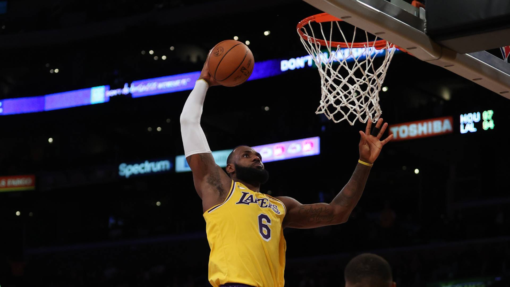

One sport I love watching is Formula 1. I love this sport because the amount of engineering, technology, and precisions that goes in this sport is second to none. We are talking about precision so precise that one wrong decision or one loose screw could result in a team winning or losing a championship. Formula 1 has 10 teams, they are: Mercedes Petronaas Amg, Red Bull Racing, Ferrari, McClaren, Aston Martin, Alpha Tauri, Williams, Haas, Alpha Romeo, and Alpine. These ten teams have 2 drivers, in total 20 drivers. They race all around the world from here in USA, Texas to Australia, Sydney. With millions of fans around the world, these teams have around 22 races a year and work on developing their cars throughout the year. Regulation and rules limit the external and internal look of the car. That's why I love this sport, because of how precise each rule and regulation can become and how hard the drivers and engineer have to work together to get the best out of the car!
Unlike Formula 1, I can actually play basketball which I tend to do when I go to the gym. Basketball is a very competitive game even though it might seem simple if your definition is, "put the ball in the basket", Well it's not. Just like most sports, it seems simple on the outside, but the more you watch the game, the more intriguing it becomes. One of my favorite players being Lebron James. He is 37 years old and still dominating in this league. If you don't know him, please do yourself justice and look his name up. His willingness to fight through physically and mental blocks is what inspires me to do the same. Many people who play basketball, will say this if asked, that basketball is like therapy for them meaning when you're playing the game, there is nothing on your mind besides getting the ball in the hoop.
